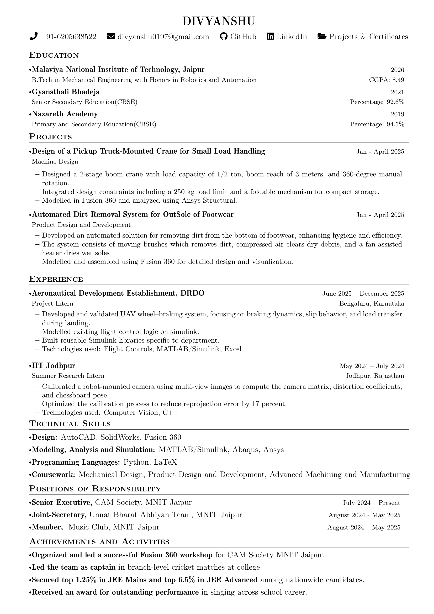
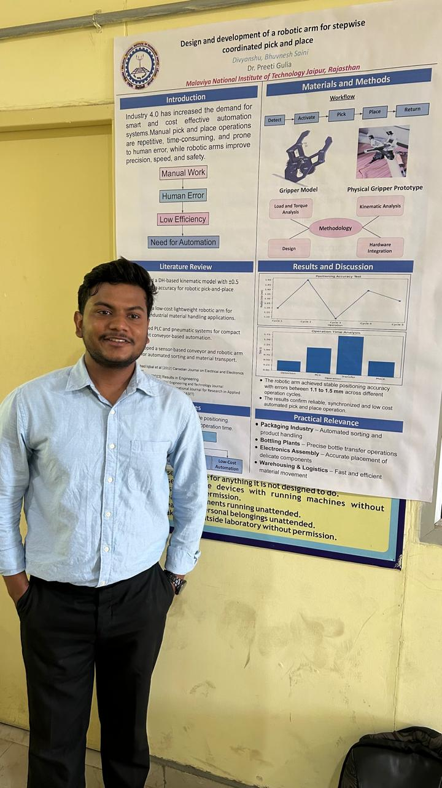
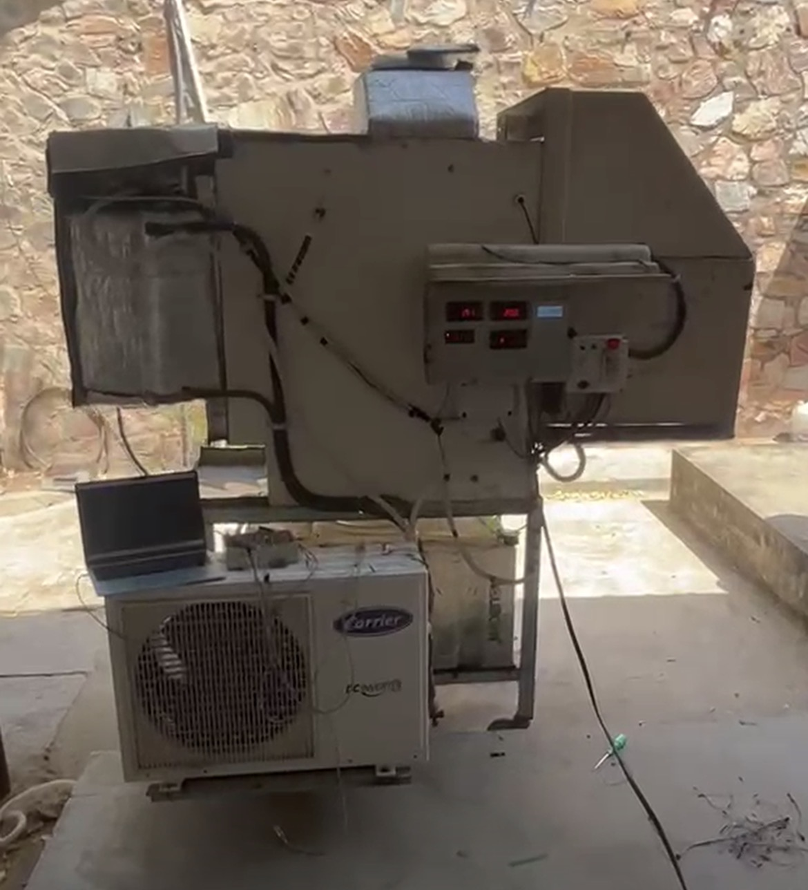

Resume.
I’m a recent Mechanical Engineering graduate from NIT Jaipur looking to build a career around mechanical design and automation. I’m primarily interested in designing mechanical systems, developing automated solutions and exploring how robotics can extend what those systems are capable of.




